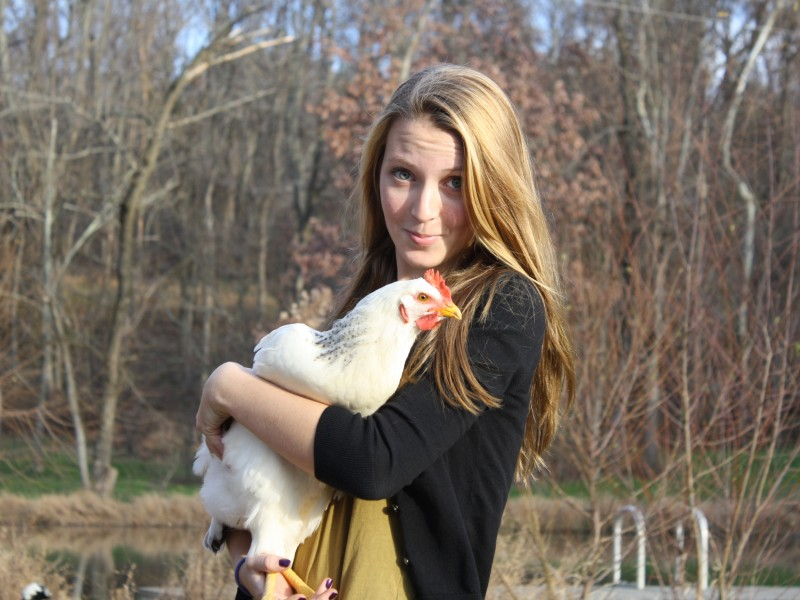

April 22, 2016
Triple Jump: $30,000 for 2016 Grants

Building on the “birthday surprise” that launched Finley’s Fund, an effort sustained by friends, family, and strangers from around the globe in 2014, the fund has continued to grow through gifts and community fundraising events. And now its ability to provide grants has grown as well, and in 2016 the fund is tripling its awards.
The fund is committing to a total $30,000 of support this spring, shared among four different organizations. Two of the organizations are new to Finley’s Fund, and two are sustaining awards to the grantees Finley originally selected. All of the grants support activities that fight climate change either through forest protection, tree planting, or reduced consumption.
The four grantees are:
- Catalog Choice: a challenge grant up to $10,000
- Cool Earth: $10,000
- Cacapon Institute: $5,000
- Green Belt Movement: $5,000
Thank you to all who have supported Finley’s Fund through donations, or by participating in fundraisers like our annual Old Bust Head Benefit 5K Run/Walk each October.
If you’d like to know more about donating to the fund, you can do so at any time through the Northern Piedmont Community Foundation’s website. Just be sure to note that the contribution is for “Finley’s Fund”.